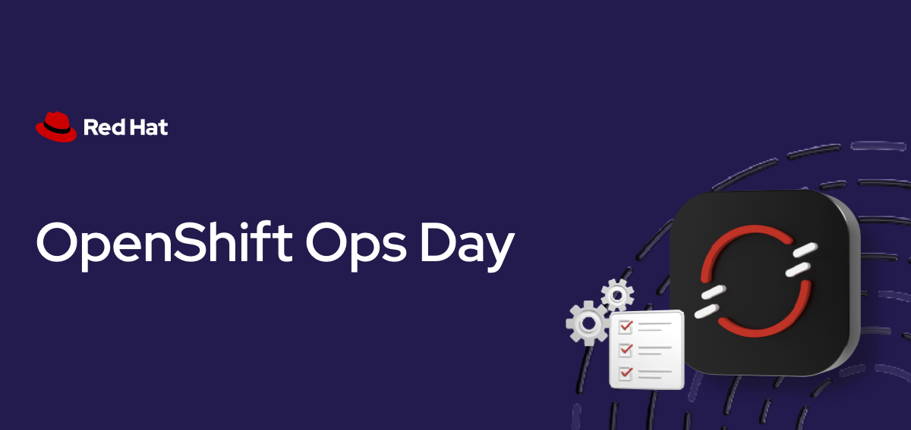

Setup & Overview
Duration: 15-20 minutes
Format: Hands-on demonstration
Console Access
-
Username:
{openshift_cluster_admin_username} -
Password:
{openshift_cluster_admin_password} -
Console: {openshift_cluster_console_url}[window=blank]
| We recommend using the OCP Console tab within this Showroom interface as it is easier to follow along. |

Let’s Go
You have cluster admin access to a live OpenShift cluster. Let’s make sure everything’s working - click the commands below:
oc whoamiYou should see your admin user.
oc get nodesThree nodes, all Ready.
oc get clusterversionThat’s your cluster version and update channel. You’re in.
About This Workshop
Every ops team hits the same wall with Kubernetes:
-
The cluster is running, but who handles authentication?
-
How do you back up a namespace someone accidentally deleted?
-
What happens when pods crash at 2am and nobody knows where to look?
This workshop lets you answer those questions through hands-on exercises. You’ll break things and fix them, diagnose real failure modes, configure production security, and see what OpenShift looks like when things go wrong (and how fast you can recover).
Your Workshop Interface
Your workshop runs in a split-panel interface with the following panels:
-
Left panel - Instructions (what you’re reading now)
-
Right panel - Tabbed workspace with your cluster tools
-
Draggable divider - Drag the border between panels to resize
| Tab | What it is |
|---|---|
OCP Console |
The OpenShift web console - cluster management, monitoring dashboards, and troubleshooting. |
Terminal |
A web-based terminal pre-connected to your cluster. Run |
RHACS |
Red Hat Advanced Cluster Security - vulnerability scanning, compliance, and runtime security. |
ArgoCD |
OpenShift GitOps - continuous delivery using GitOps principles. |
Developer Hub |
Red Hat Developer Hub - developer portal with software catalogs and self-service templates. |
| Highlighted command blocks are clickable - they switch to the Terminal tab and execute automatically. |
Modules
|
This workshop is modular. Your session has a specific set of modules - only the ones in the navigation on the left are available. The full catalog covers: |
| Area | What you’ll do |
|---|---|
Platform Fundamentals |
Verify cluster health, check etcd metrics, deploy an app and expose it in 30 seconds |
Application Operations |
Deploy workloads, break a readiness probe on purpose, scale with the Horizontal Pod Autoscaler (HPA) under real load, configure network policies |
Identity & Access |
Integrate LDAP and OIDC authentication, sync groups, test RBAC by logging in as different users |
Day 2 Operations |
Create alerting rules, set up logging, configure distributed tracing, right-size workloads with VPA |
Advanced Capabilities |
Run a VM alongside containers and live-migrate it, manage multiple clusters with ACM, scan for vulnerabilities with ACS |
Developer Productivity |
Register applications in Developer Hub, see how golden path templates replace ops tickets with self-service |
Exploring the Platform
Your cluster is already running with monitoring, a container registry, ingress routing, and a web console - all built in. Let’s see what’s there.
Step 1: Access the Administrator Console
The OpenShift Web Console provides a unified view of your entire cluster.
You can access the console in two ways:
-
OCP Console tab - Click the OCP Console tab at the top of this workshop. The console is embedded directly in the workshop interface so you can follow along without switching windows.
-
Separate browser tab - If you prefer a full-screen experience, you can open the console in a separate browser tab by clicking the URL: {openshift_cluster_console_url}[window=blank]
| ctrl + click on the URL to open URLs in a new tab. |
| If you see an authentication error, click Try Again or reload the tab at the top and try again. |
Administrator login credentials:
Username: |
{openshift_cluster_admin_username} |
Password: |
{openshift_cluster_admin_password} |
Step 2: Switch to Administrator Perspective
In the top-left corner of the console, you’ll see a perspective switcher dropdown. Click the dropdown and select Administrator.
Step 3: Dashboard Overview
Once in the Administrator perspective, you’ll see the Overview dashboard under Home → Overview.
Key sections to notice:
-
Cluster Status - Overall health at a glance
-
Cluster Utilization - CPU, Memory, Storage metrics
-
Cluster Inventory - Node count, Pod count, etc.
-
Activity - Recent events and alerts
This single dashboard gives you cluster health, utilisation, inventory, and recent events - all in one view, with no setup required.
Platform Capabilities
Everything below - monitoring, a container registry, and ingress routing - was running before anyone logged in. Let’s prove it.
Monitoring
Nobody installed Prometheus on this cluster. It’s already running.
Explore Prometheus (CLI)
oc get pods -n openshift-monitoring | grep prometheusYou’ll see Prometheus pods already running (output truncated):
prometheus-k8s-0 6/6 Running 0 55m prometheus-k8s-1 6/6 Running 0 55m prometheus-operator-admission-webhook-c9f987dd7-bld9f 1/1 Running 0 71m prometheus-operator-admission-webhook-c9f987dd7-h4jtc 1/1 Running 0 71m prometheus-operator-bb6c949f9-6rpnl 2/2 Running 0 66m
Access Metrics (Console)
-
In the Console, navigate to Observe → Dashboards
-
Click the dropdown labeled Dashboard (it may show "API Performance" by default)
-
Select Kubernetes / Compute Resources / Cluster from the dropdown
-
You’ll see real-time metrics:
-
CPU Utilisation
-
Memory Utilisation
-
Network I/O
-
Filesystem I/O
-
No configuration required. This is built-in.
Query Prometheus (Advanced)
-
Navigate to Observe → Metrics
-
Try this PromQL query:
sum(rate(container_cpu_usage_seconds_total[5m])) by (namespace) -
Click Run Queries
You’ll see CPU usage broken down by namespace. This is a useful way to see which namespaces are consuming the most CPU.
Look at which namespaces are consuming the most CPU. openshift-monitoring and openshift-etcd are usually at the top because they run the cluster’s own infrastructure.
|
All of this was available the moment the cluster came up.
Container Registry
Did anyone set up an image registry? Let’s check:
oc get pods -n openshift-image-registryOutput (truncated):
NAME READY STATUS RESTARTS AGE cluster-image-registry-operator-86c45576b9-v8j48 1/1 Running 1 (73m ago) 89m image-registry-5cd768f9b5-nnrx5 1/1 Running 0 72m image-registry-5cd768f9b5-pcnqk 1/1 Running 0 72m node-ca-2487m 1/1 Running 0 72m node-ca-5lh4f 1/1 Running 0 72m ...
Already running - with authentication, HA replicas, and storage configured. Nobody installed it.
View Image Streams
Image streams are OpenShift’s way of pointing to container images without hardcoding registry URLs. When an image updates, your builds and deployments can automatically pick up the change.
oc get imagestreams -n openshiftYou’ll see pre-loaded builder images (output truncated):
NAME IMAGE REPOSITORY TAGS cli image-registry.openshift-image-registry.svc:5000/openshift/cli latest dotnet image-registry.openshift-image-registry.svc:5000/openshift/dotnet 6.0,8.0,9.0,6.0-ubi8,8.0-ubi8,9.0-ubi8... nodejs image-registry.openshift-image-registry.svc:5000/openshift/nodejs 20-minimal-ubi8,20-minimal-ubi9,20-ubi8... python image-registry.openshift-image-registry.svc:5000/openshift/python 3.11-ubi8,3.11-ubi9,3.12-minimal-ubi10...
These are ready to use - no Docker Hub rate limits, no external dependencies.
Routing
Same story with ingress - it’s already there. Check it:
oc get routes -A | head -10You’ll see Routes (OpenShift’s ingress abstraction - output truncated):
NAMESPACE NAME HOST/PORT open-cluster-management acm-cli-downloads acm-cli-downloads.apps.cluster... openshift-authentication oauth-openshift oauth-openshift.apps.cluster... openshift-console console console-openshift-console.apps.cluster... openshift-console downloads downloads-openshift-console.apps.cluster...
Routes give you HAProxy-based ingress with automatic TLS certs and DNS. OpenShift also supports standard Kubernetes Ingress resources if you prefer.
Try It: Deploy and Expose in 30 Seconds
How fast can you go from nothing to a running app with a public URL? Three commands:
oc new-project quick-demo
oc new-app --name=hello --image=registry.access.redhat.com/ubi9/httpd-24
oc create route edge hello --service=helloGet the URL and test it:
curl -sk https://$(oc get route hello -n quick-demo -o jsonpath='{.spec.host}') | head -3You should see the httpd test page HTML. That’s a deployed app, with a service, a TLS-terminated route, and automatic DNS - in three commands.
Clean up (runs in the background so we can move on):
oc delete project quick-demo &>/dev/null &Cluster Management
Nodes
Let’s look at what you’re running on:
oc get nodesYour environment uses a compact cluster - 3 nodes that serve as both control plane and worker:
NAME STATUS ROLES AGE VERSION control-plane-cluster-xxxxx-1 Ready control-plane,master,worker 20h v1.33.6 control-plane-cluster-xxxxx-2 Ready control-plane,master,worker 20h v1.33.6 control-plane-cluster-xxxxx-3 Ready control-plane,master,worker 20h v1.33.6
| Node names and count vary by deployment. Production clusters typically have separate control plane and worker nodes. This workshop uses a compact topology where all nodes serve both roles. |
Check Node Details (Console)
-
Navigate to Compute → Nodes
-
Click on any node
-
The Overview tab immediately shows you:
-
Status - shows whether the node is healthy and flags any issues. On this workshop cluster you’ll see overcommit warnings for CPU and memory - this means pod limits exceed the node’s capacity, but that doesn’t mean the node is in trouble. Check the Utilization section below to see actual usage vs available capacity. If actual usage is well within capacity, the overcommit is fine. You’ll also see firing alerts - on a workshop cluster with many operators installed, this is expected.
However, look at the Utilization graphs below - actual CPU and memory usage is well within capacity. The difference is important: requests (what’s guaranteed) fit on the node, limits (what pods are allowed to burst to) don’t. In practice, all pods bursting at once rarely happens, especially in a workshop environment. In production, you’d either right-size your limits, add nodes, or accept the overcommit if your workloads don’t burst together.
-
Utilization graphs - CPU, Memory, Filesystem, and Network over time. Compare "available" to actual usage - that tells you the real capacity story, not the theoretical limits.
-
Pod count - how many pods are running on this node.
-
-
Click the Pods tab to see every pod on that node with its CPU and memory usage.
Active alerts, utilization graphs, and per-pod resource usage are all in one console view - no SSH to nodes required.
Infrastructure Management
MachineSets - Automated Infrastructure Scaling
OpenShift uses MachineSets to automate infrastructure scaling. On cloud platforms (AWS, Azure, GCP), MachineSets manage worker nodes across availability zones - you can scale up by changing a replica count rather than manually provisioning machines.
When ACM is installed, machinesets exists in two API groups (Cluster API and OpenShift Machine API). We use the full resource name machinesets.machine.openshift.io to target OpenShift’s Machine API.
|
oc get machinesets.machine.openshift.io -n openshift-machine-apiYour compact cluster has a single MachineSet scaled to 0 - all 3 nodes serve as both control plane and worker, so no separate worker machines are needed:
NAME DESIRED CURRENT READY AVAILABLE AGE cluster-xxxxx-worker-0 0 0 20h
In a production cloud deployment, you’d see multiple MachineSets (one per availability zone) with active worker replicas that can be scaled up or down.
You can see this in the console at Compute → MachineSets:
In a production cluster, this view shows the machine count, instance type, CPU, and memory for each MachineSet - and you can scale directly from the console by editing the desired count.
You can also view the machine resources:
oc get machines.machine.openshift.io -n openshift-machine-apiThis shows the underlying compute instances that OpenShift is managing.
Scaling Workers
To add another worker node, simply scale the MachineSet:
| Do not run this command - it is shown as an example only. This workshop environment does not have spare hosts available for scaling. |
# Example - scales a zone from 0 to 1 worker
oc scale machineset.machine.openshift.io <machineset-name> --replicas=1 -n openshift-machine-apiOpenShift automatically provisions a compute instance, configures it, and joins it to the cluster - one command to scale your infrastructure.
| This workshop environment runs on bare metal without spare hosts available, so scaling is shown as an example rather than a live exercise. On cloud platforms (AWS, Azure, GCP), the Machine API provisions new instances automatically. |
Over-the-Air Upgrades
Check the cluster version:
oc get clusterversionOutput:
NAME VERSION AVAILABLE PROGRESSING SINCE STATUS version 4.x True False 32m Cluster version is 4.x
View Available Upgrades (Console)
-
Navigate to Administration → Cluster Settings
-
Click Select a version button (if available)
-
See available upgrade paths
| If your cluster shows Update status: Up to date, the Select a version button will not appear. This means your cluster is already running the latest available version in its update channel. |
OpenShift handles upgrades automatically:
-
Rolling upgrades of control plane
-
Automated worker node updates
-
Zero-downtime upgrades
Operator Ecosystem
Need to add something to the cluster? See how many operators are available right now:
oc get packagemanifests -n openshift-marketplace | wc -lHundreds of operators ready to install - a mix of Red Hat, certified partner, and community options.
Explore Software Catalog (Console)
-
Navigate to Ecosystem → Software Catalog
-
You may need to select a project from the dropdown - if one is not already selected, choose default
-
You’ll see the unified software catalog with categories on the left:
-
AI/Machine Learning - Red Hat OpenShift AI, Open Data Hub
-
CI/CD - Red Hat OpenShift GitOps, Red Hat OpenShift Pipelines
-
Database - Red Hat AMQ Streams (Kafka)
-
Security - Red Hat Advanced Cluster Security
-
Storage - Red Hat OpenShift Data Foundation
-
Integration & Delivery - Red Hat Integration, Red Hat Service Mesh, Red Hat Serverless
-
And many more…
-
-
Filter by Type and select Operators to see the full list of available operators
-
Feel free to click any operator tile to browse its details - this is just for exploration, no need to install anything
Browse the tiles, click into anything that looks interesting - this is your cluster, explore it.
What’s Next
You’ve seen what’s running out of the box - monitoring, registry, routing, node management, upgrades, and a catalog of operators ready to install. None of it required setup.
The rest of this workshop goes deeper. Select the next module from the navigation to start working with it hands-on.